ggplot2 Fundamentals¶
Overview¶
ggplot2 is R's most powerful and popular visualization package, implementing the Grammar of Graphics framework. Created by Hadley Wickham, ggplot2 provides a consistent, layered approach to building visualizations that separates data, aesthetic mappings, and geometric representations.
The Grammar of Graphics in ggplot2¶
Every ggplot2 visualization is built from these components:
- Data: The dataset to visualize
- Aesthetics (aes): Mappings from data to visual properties
- Geometries (geom): The visual elements that represent data
- Scales: How data values map to aesthetic values
- Coordinate systems: How positions are interpreted
- Facets: Splitting data into subplots
- Themes: Non-data visual elements
Basic Syntax¶
library(ggplot2)
# Basic structure
ggplot(data = <DATA>) +
<GEOM_FUNCTION>(mapping = aes(<MAPPINGS>))
First Plot¶
library(ggplot2)
# Using built-in mpg dataset
ggplot(data = mpg) +
geom_point(mapping = aes(x = displ, y = hwy))
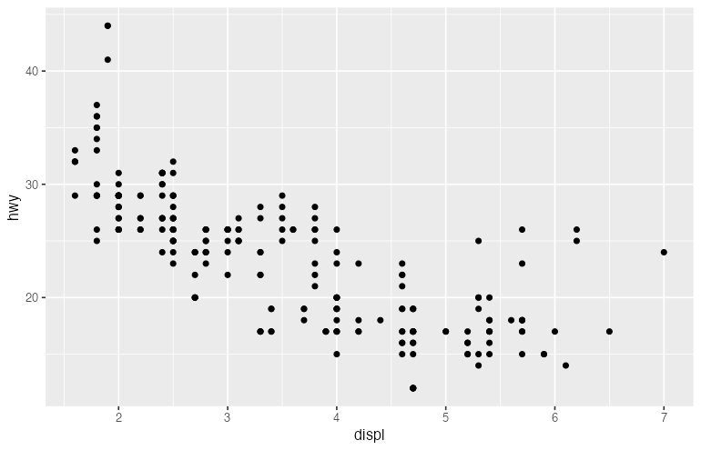
Visual description: A scatter plot showing the relationship between engine displacement (x-axis) and highway miles per gallon (y-axis) for various car models.
Aesthetic Mappings¶
Aesthetics connect data variables to visual properties:
library(ggplot2)
# Map color to a variable
ggplot(data = mpg) +
geom_point(mapping = aes(x = displ, y = hwy, color = class))
# Map size to a variable
ggplot(data = mpg) +
geom_point(mapping = aes(x = displ, y = hwy, size = cyl))
# Map shape to a variable
ggplot(data = mpg) +
geom_point(mapping = aes(x = displ, y = hwy, shape = drv))
# Map transparency (alpha) to a variable
ggplot(data = mpg) +
geom_point(mapping = aes(x = displ, y = hwy, alpha = cyl))
# Multiple aesthetics
ggplot(data = mpg) +
geom_point(mapping = aes(x = displ, y = hwy, color = class, size = cyl))
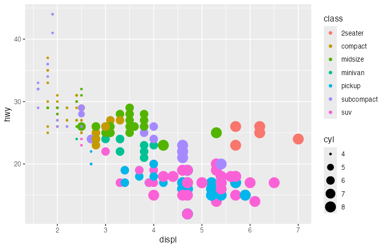
Setting vs Mapping Aesthetics¶
library(ggplot2)
# Mapping: inside aes() - connects to data
ggplot(data = mpg) +
geom_point(mapping = aes(x = displ, y = hwy, color = class))
# Setting: outside aes() - fixed value
ggplot(data = mpg) +
geom_point(mapping = aes(x = displ, y = hwy), color = "blue", size = 3)
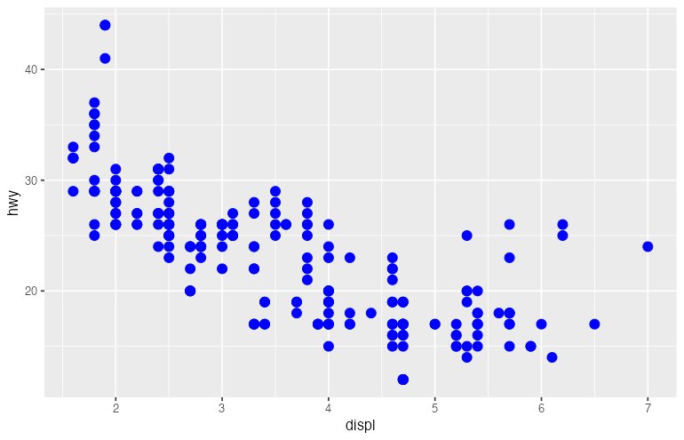
Geometric Objects (Geoms)¶
Points: geom_point()¶
library(ggplot2)
ggplot(data = mpg, aes(x = displ, y = hwy)) +
geom_point(aes(color = class), size = 3, alpha = 0.7)
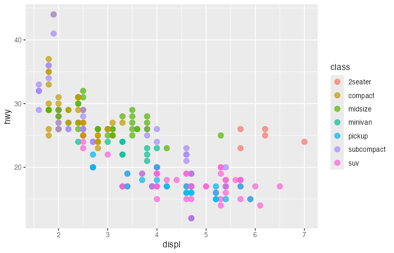
Lines: geom_line() and geom_path()¶
library(ggplot2)
# Time series data
economics_subset <- economics[economics$date >= "2000-01-01", ]
# geom_line connects points in order of x
ggplot(data = economics_subset, aes(x = date, y = unemploy)) +
geom_line(color = "steelblue", size = 1)
# Multiple lines with color mapping
library(tidyr)
econ_long <- economics %>%
pivot_longer(cols = c(psavert, uempmed), names_to = "metric", values_to = "value")
ggplot(econ_long, aes(x = date, y = value, color = metric)) +
geom_line(size = 1)
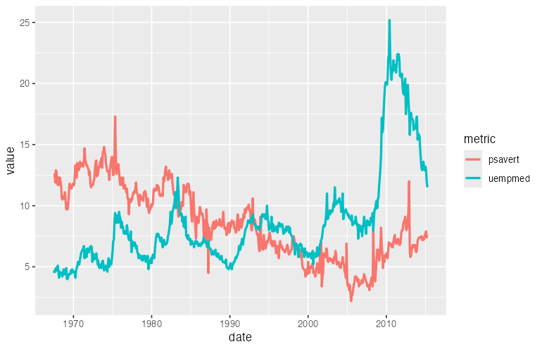
Smooth Lines: geom_smooth()¶
library(ggplot2)
# Add trend line
ggplot(data = mpg, aes(x = displ, y = hwy)) +
geom_point() +
geom_smooth() # Default: loess for n < 1000, gam for larger
# Linear regression line
ggplot(data = mpg, aes(x = displ, y = hwy)) +
geom_point() +
geom_smooth(method = "lm", se = TRUE)
# Separate smooths by group
ggplot(data = mpg, aes(x = displ, y = hwy, color = drv)) +
geom_point() +
geom_smooth(method = "lm")
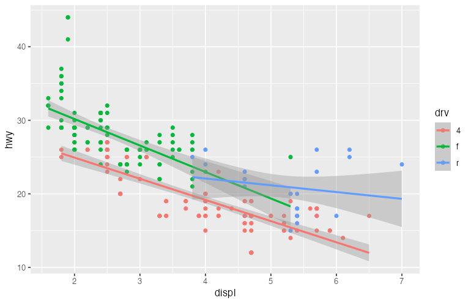
Bars: geom_bar() and geom_col()¶
library(ggplot2)
# geom_bar: counts occurrences (stat = "count")
ggplot(data = mpg) +
geom_bar(mapping = aes(x = class))
# geom_col: uses values directly (stat = "identity")
# Requires pre-summarized data
library(dplyr)
mpg_summary <- mpg %>%
group_by(class) %>%
summarize(avg_hwy = mean(hwy))
ggplot(data = mpg_summary) +
geom_col(mapping = aes(x = class, y = avg_hwy))
# Stacked bars
ggplot(data = mpg) +
geom_bar(mapping = aes(x = class, fill = drv))
# Dodged (grouped) bars
ggplot(data = mpg) +
geom_bar(mapping = aes(x = class, fill = drv), position = "dodge")
# Filled bars (proportions)
ggplot(data = mpg) +
geom_bar(mapping = aes(x = class, fill = drv), position = "fill")
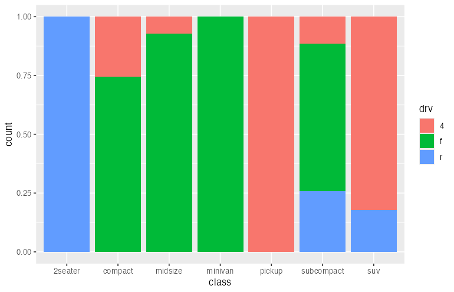
Histograms: geom_histogram()¶
library(ggplot2)
# Basic histogram
ggplot(data = mpg, aes(x = hwy)) +
geom_histogram(bins = 30, fill = "steelblue", color = "white")
# With density curve overlay
ggplot(data = mpg, aes(x = hwy)) +
geom_histogram(aes(y = ..density..), bins = 30, fill = "steelblue", color = "white") +
geom_density(color = "red", size = 1)
# Faceted histograms
ggplot(data = mpg, aes(x = hwy, fill = drv)) +
geom_histogram(bins = 20, alpha = 0.7, position = "identity")
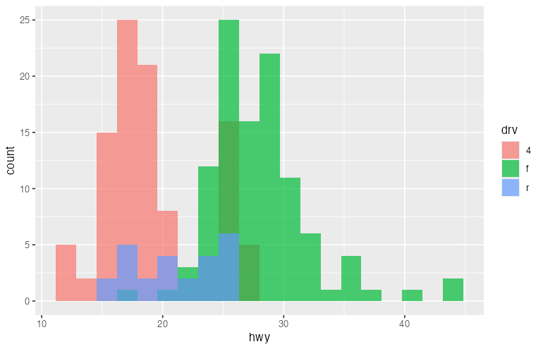
Density: geom_density()¶
library(ggplot2)
# Single density
ggplot(data = mpg, aes(x = hwy)) +
geom_density(fill = "steelblue", alpha = 0.5)
# Multiple overlapping densities
ggplot(data = mpg, aes(x = hwy, fill = drv)) +
geom_density(alpha = 0.5)
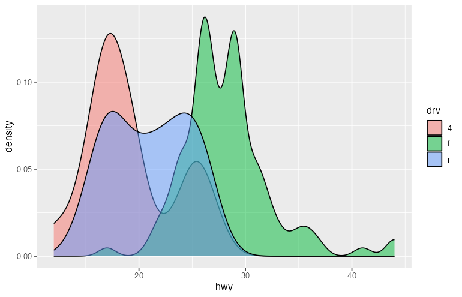
Box Plots: geom_boxplot()¶
library(ggplot2)
# Basic boxplot
ggplot(data = mpg, aes(x = class, y = hwy)) +
geom_boxplot()
# With color
ggplot(data = mpg, aes(x = class, y = hwy, fill = class)) +
geom_boxplot() +
theme(legend.position = "none")
# Horizontal boxplot
ggplot(data = mpg, aes(x = class, y = hwy)) +
geom_boxplot() +
coord_flip()
# With notches (confidence interval for median)
ggplot(data = mpg, aes(x = class, y = hwy)) +
geom_boxplot(notch = TRUE)
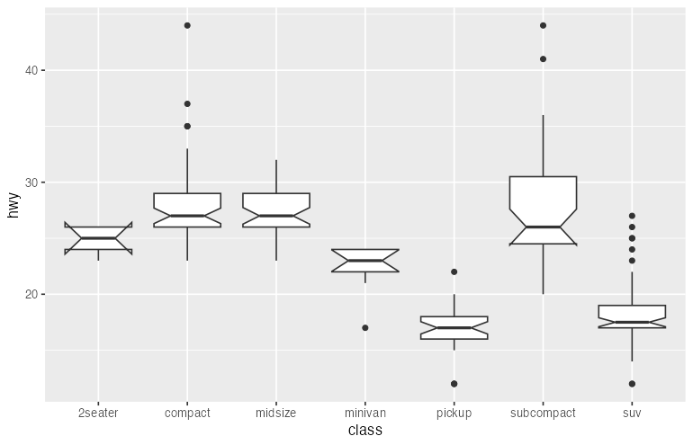
Violin Plots: geom_violin()¶
library(ggplot2)
# Basic violin
ggplot(data = mpg, aes(x = class, y = hwy)) +
geom_violin(fill = "steelblue", alpha = 0.7)
# Violin with boxplot inside
ggplot(data = mpg, aes(x = class, y = hwy)) +
geom_violin(fill = "lightblue") +
geom_boxplot(width = 0.1)
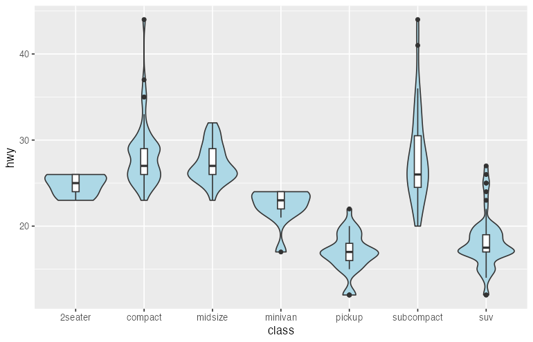
Area: geom_area()¶
library(ggplot2)
ggplot(data = economics, aes(x = date, y = unemploy)) +
geom_area(fill = "steelblue", alpha = 0.7)
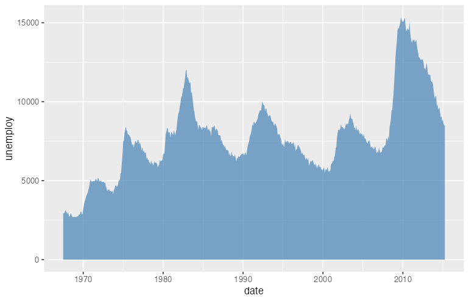
Text and Labels: geom_text() and geom_label()¶
library(ggplot2)
library(dplyr)
# Summarize data
mpg_summary <- mpg %>%
group_by(class) %>%
summarize(
avg_hwy = mean(hwy),
count = n()
)
# Bar chart with labels
ggplot(data = mpg_summary, aes(x = class, y = avg_hwy)) +
geom_col(fill = "steelblue") +
geom_text(aes(label = round(avg_hwy, 1)), vjust = -0.5)
# Scatter plot with labels
ggplot(data = mpg_summary, aes(x = count, y = avg_hwy)) +
geom_point(size = 4) +
geom_label(aes(label = class), nudge_y = 1)
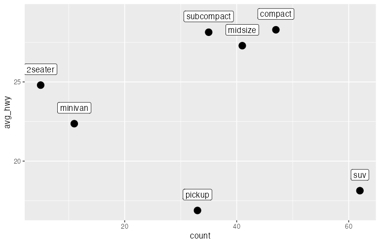
Faceting¶
Faceting creates small multiples, splitting data across multiple panels.
facet_wrap()¶
library(ggplot2)
# Wrap by one variable
ggplot(data = mpg, aes(x = displ, y = hwy)) +
geom_point() +
facet_wrap(~ class)
# Control layout
ggplot(data = mpg, aes(x = displ, y = hwy)) +
geom_point() +
facet_wrap(~ class, nrow = 2)
# Free scales
ggplot(data = mpg, aes(x = displ, y = hwy)) +
geom_point() +
facet_wrap(~ class, scales = "free")
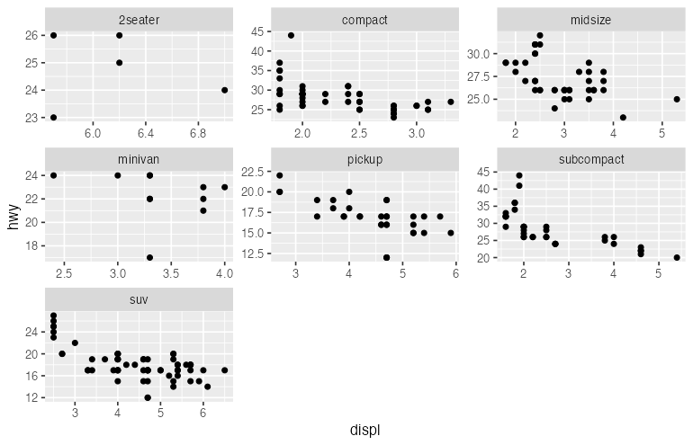
facet_grid()¶
library(ggplot2)
# Grid by two variables
ggplot(data = mpg, aes(x = displ, y = hwy)) +
geom_point() +
facet_grid(drv ~ cyl)
# One variable in rows only
ggplot(data = mpg, aes(x = displ, y = hwy)) +
geom_point() +
facet_grid(drv ~ .)
# One variable in columns only
ggplot(data = mpg, aes(x = displ, y = hwy)) +
geom_point() +
facet_grid(. ~ cyl)
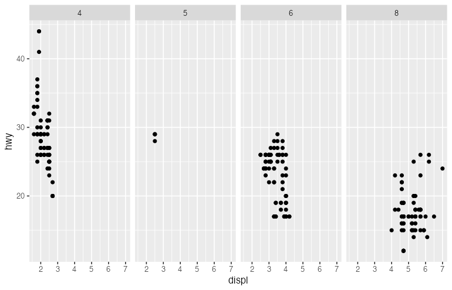
Scales¶
Scales control how data values map to visual values.
Position Scales¶
library(ggplot2)
# Continuous scales
ggplot(data = mpg, aes(x = displ, y = hwy)) +
geom_point() +
scale_x_continuous(breaks = seq(1, 7, 1), limits = c(1, 7)) +
scale_y_continuous(breaks = seq(10, 45, 5))
# Log scale
ggplot(data = diamonds, aes(x = carat, y = price)) +
geom_point(alpha = 0.1) +
scale_x_log10() +
scale_y_log10()
# Reverse scale
ggplot(data = mpg, aes(x = displ, y = hwy)) +
geom_point() +
scale_y_reverse()
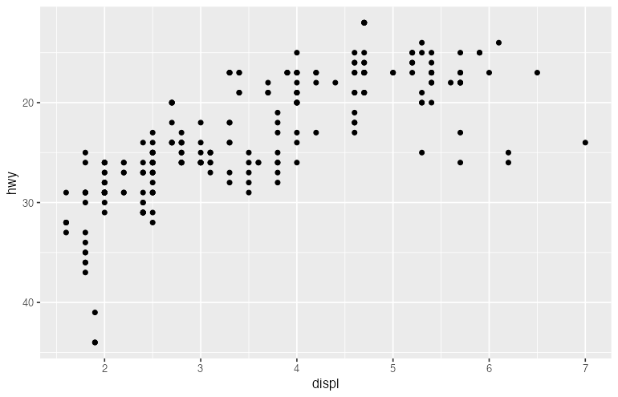
Color Scales¶
library(ggplot2)
# Discrete color scale
ggplot(data = mpg, aes(x = displ, y = hwy, color = class)) +
geom_point() +
scale_color_brewer(palette = "Set1")
# Manual colors
ggplot(data = mpg, aes(x = displ, y = hwy, color = drv)) +
geom_point() +
scale_color_manual(values = c("4" = "#E41A1C", "f" = "#377EB8", "r" = "#4DAF4A"))
# Continuous color scale
ggplot(data = mpg, aes(x = displ, y = hwy, color = cty)) +
geom_point(size = 3) +
scale_color_gradient(low = "blue", high = "red")
# Diverging color scale
ggplot(data = mpg, aes(x = displ, y = hwy, color = cty - mean(cty))) +
geom_point(size = 3) +
scale_color_gradient2(low = "blue", mid = "white", high = "red", midpoint = 0)
# Viridis color scale (colorblind-friendly)
ggplot(data = mpg, aes(x = displ, y = hwy, color = cty)) +
geom_point(size = 3) +
scale_color_viridis_c()
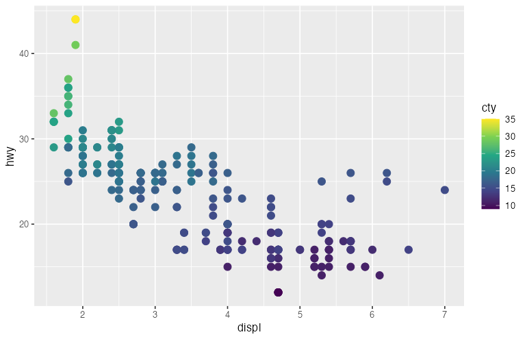
Fill Scales¶
library(ggplot2)
ggplot(data = mpg, aes(x = class, fill = class)) +
geom_bar() +
scale_fill_brewer(palette = "Pastel1")
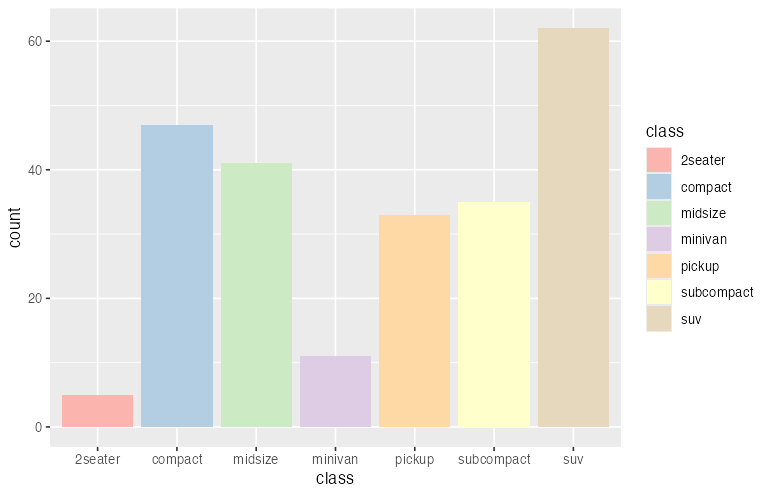
Coordinate Systems¶
library(ggplot2)
# Flip coordinates
ggplot(data = mpg, aes(x = class)) +
geom_bar() +
coord_flip()
# Fixed aspect ratio
ggplot(data = mpg, aes(x = cty, y = hwy)) +
geom_point() +
coord_fixed(ratio = 1)
# Polar coordinates (for pie charts)
ggplot(data = mpg, aes(x = factor(1), fill = class)) +
geom_bar(width = 1) +
coord_polar(theta = "y")
# Zoom without clipping data
ggplot(data = mpg, aes(x = displ, y = hwy)) +
geom_point() +
geom_smooth() +
coord_cartesian(xlim = c(2, 5), ylim = c(20, 40))
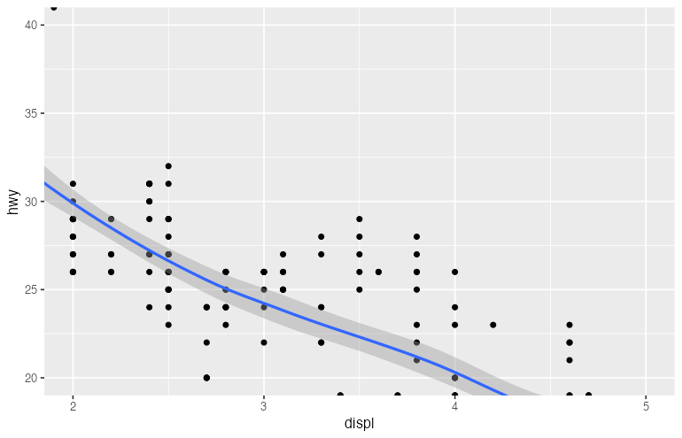
Labels and Annotations¶
library(ggplot2)
ggplot(data = mpg, aes(x = displ, y = hwy, color = class)) +
geom_point() +
labs(
title = "Fuel Efficiency vs Engine Size",
subtitle = "Data from EPA fuel economy tests",
caption = "Source: fueleconomy.gov",
x = "Engine Displacement (liters)",
y = "Highway MPG",
color = "Vehicle Class"
)
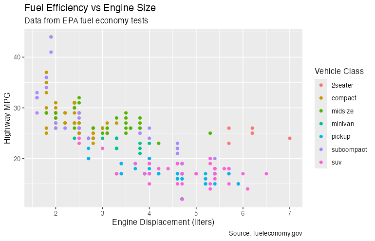
Adding Annotations¶
library(ggplot2)
ggplot(data = mpg, aes(x = displ, y = hwy)) +
geom_point() +
annotate("text", x = 5, y = 40, label = "Most efficient", color = "red") +
annotate("rect", xmin = 1.5, xmax = 2.5, ymin = 35, ymax = 45,
alpha = 0.2, fill = "blue") +
annotate("segment", x = 5, y = 38, xend = 4, yend = 35,
arrow = arrow(length = unit(0.2, "cm")))
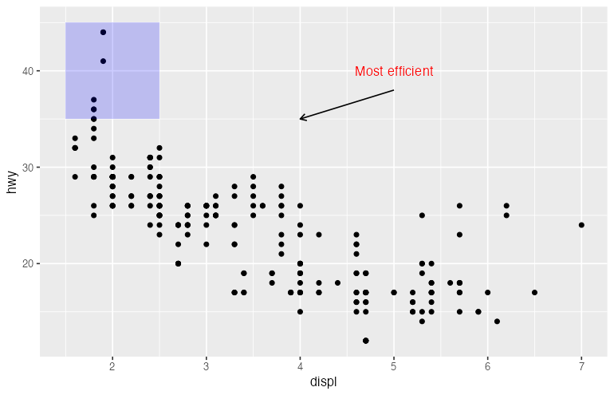
Themes¶
Themes control non-data elements of the plot.
Built-in Themes¶
library(ggplot2)
p <- ggplot(data = mpg, aes(x = displ, y = hwy, color = class)) +
geom_point()
# Default theme
p + theme_gray()
# Minimal theme
p + theme_minimal()
# Classic theme
p + theme_classic()
# Black and white theme
p + theme_bw()
# Light theme
p + theme_light()
# Dark theme
p + theme_dark()
# Void theme (no axes)
p + theme_void()
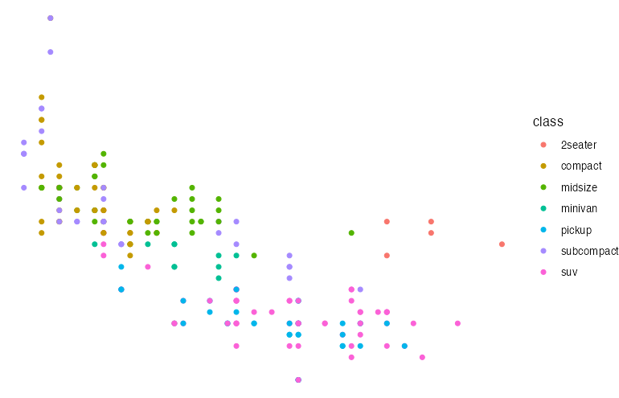
Custom Theme Elements¶
library(ggplot2)
ggplot(data = mpg, aes(x = displ, y = hwy, color = class)) +
geom_point() +
labs(title = "Fuel Efficiency") +
theme(
# Title
plot.title = element_text(size = 18, face = "bold", hjust = 0.5),
# Axis text
axis.title = element_text(size = 14),
axis.text = element_text(size = 12),
# Legend
legend.position = "bottom",
legend.title = element_text(face = "bold"),
# Panel
panel.background = element_rect(fill = "white"),
panel.grid.major = element_line(color = "gray90"),
panel.grid.minor = element_blank(),
# Plot background
plot.background = element_rect(fill = "white", color = NA)
)
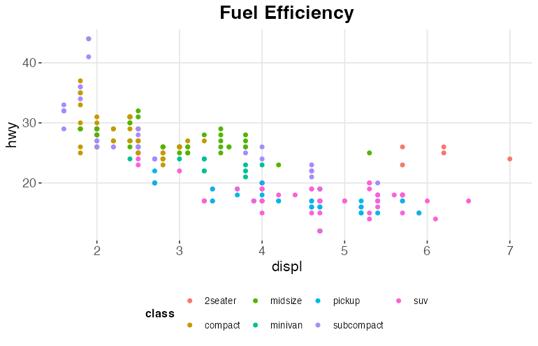
Combining Multiple Layers¶
library(ggplot2)
ggplot(data = mpg, aes(x = displ, y = hwy)) +
# Layer 1: All points in light gray
geom_point(color = "gray80", size = 2) +
# Layer 2: Highlighted points for SUVs
geom_point(data = subset(mpg, class == "suv"),
color = "red", size = 3) +
# Layer 3: Smooth line for all data
geom_smooth(method = "lm", se = FALSE, color = "blue") +
# Layer 4: Annotation
annotate("text", x = 6, y = 35, label = "SUVs highlighted in red") +
labs(title = "Engine Size vs Fuel Efficiency",
subtitle = "SUVs highlighted")
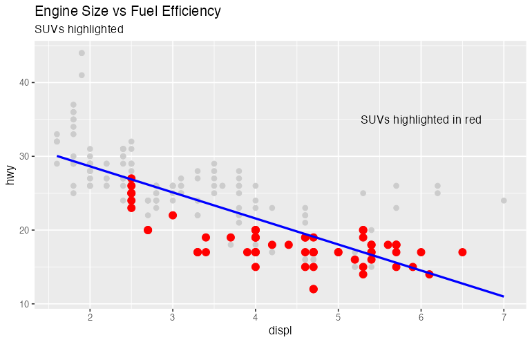
Statistical Transformations¶
library(ggplot2)
# Explicit stat usage
ggplot(data = diamonds, aes(x = cut)) +
geom_bar(stat = "count") # Default for geom_bar
# Using stat_summary
ggplot(data = mpg, aes(x = class, y = hwy)) +
stat_summary(fun = mean, geom = "bar", fill = "steelblue") +
stat_summary(fun.data = mean_se, geom = "errorbar", width = 0.2)
# stat_smooth
ggplot(data = mpg, aes(x = displ, y = hwy)) +
geom_point() +
stat_smooth(method = "loess", span = 0.3)
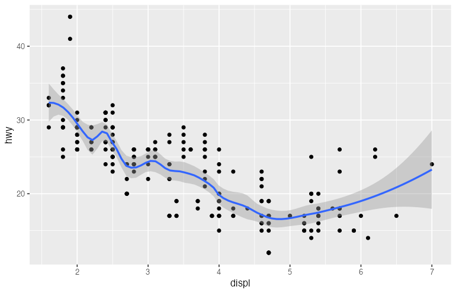
Saving Plots¶
library(ggplot2)
p <- ggplot(data = mpg, aes(x = displ, y = hwy, color = class)) +
geom_point() +
labs(title = "Fuel Efficiency")
# Save with ggsave
ggsave("my_plot.png", plot = p, width = 10, height = 6, dpi = 300)
ggsave("my_plot.pdf", plot = p, width = 10, height = 6)
ggsave("my_plot.svg", plot = p, width = 10, height = 6)
# Save last plot
ggplot(mpg, aes(displ, hwy)) + geom_point()
ggsave("last_plot.png")
Summary¶
| Component | Purpose | Example |
|---|---|---|
ggplot() |
Initialize plot with data | ggplot(data = df) |
aes() |
Map variables to aesthetics | aes(x = var1, y = var2) |
geom_*() |
Add geometric objects | geom_point(), geom_line() |
scale_*() |
Control aesthetic mappings | scale_color_brewer() |
facet_*() |
Create small multiples | facet_wrap(~ var) |
coord_*() |
Adjust coordinate system | coord_flip() |
labs() |
Add labels | labs(title = "...") |
theme() |
Customize appearance | theme_minimal() |